Convergent Validity
Brief Description
Below we provide information on the specifications of the Bayesian random-effects meta-analysis and meta-regressions, as well as an overview of the model fits, with posterior predictive checks (PPCs), approximate leave-one-out (LOO) cross-validation output, and convergence diagnostics (i.e., rhat values, trace plots, effect sample size).
To replicate these analyses, refer to the Workflow page
Bayesian random-effects meta-analysis and meta-regressions
Intercept-Only
Model specification in brms
family <- brmsfamily(
family = "student",
link = "identity"
)
formula <- bf(wcor_z|se(sei_z, sigma = TRUE) ~ 0 + Intercept + (1|sample),
sigma ~ 0 + Intercept + (1 | sample))
priors <- c(prior(normal(0, 1), class = "b", coef = "Intercept"),
prior(normal(0, 2), class = "b", dpar = "sigma", coef = "Intercept"),
prior(cauchy(0, 0.3), class = "sd"),
prior(cauchy(0, 0.3), class = "sd", dpar = "sigma"))Model Summary
## Family: student
## Links: mu = identity; sigma = log; nu = identity
## Formula: wcor_z | se(sei_z, sigma = TRUE) ~ 0 + Intercept + (1 | sample)
## sigma ~ 0 + Intercept + (1 | sample)
## Data: dt_ma (Number of observations: 5556)
## Draws: 2 chains, each with iter = 7000; warmup = 2000; thin = 1;
## total post-warmup draws = 10000
##
## Group-Level Effects:
## ~sample (Number of levels: 45)
## Estimate Est.Error l-95% CI u-95% CI
## sd(Intercept) 0.08 0.01 0.06 0.10
## sd(sigma_Intercept) 0.41 0.06 0.31 0.54
## Rhat Bulk_ESS Tail_ESS
## sd(Intercept) 1.00 1596 3450
## sd(sigma_Intercept) 1.00 1660 2944
##
## Population-Level Effects:
## Estimate Est.Error l-95% CI u-95% CI Rhat
## Intercept 0.16 0.01 0.13 0.18 1.00
## sigma_Intercept -2.00 0.07 -2.15 -1.87 1.00
## Bulk_ESS Tail_ESS
## Intercept 746 1406
## sigma_Intercept 1124 2133
##
## Family Specific Parameters:
## Estimate Est.Error l-95% CI u-95% CI Rhat Bulk_ESS
## nu 3.23 0.16 2.93 3.55 1.00 6506
## Tail_ESS
## nu 7812
##
## Draws were sampled using sample(hmc). For each parameter, Bulk_ESS
## and Tail_ESS are effective sample size measures, and Rhat is the potential
## scale reduction factor on split chains (at convergence, Rhat = 1).MCMC diagnostics
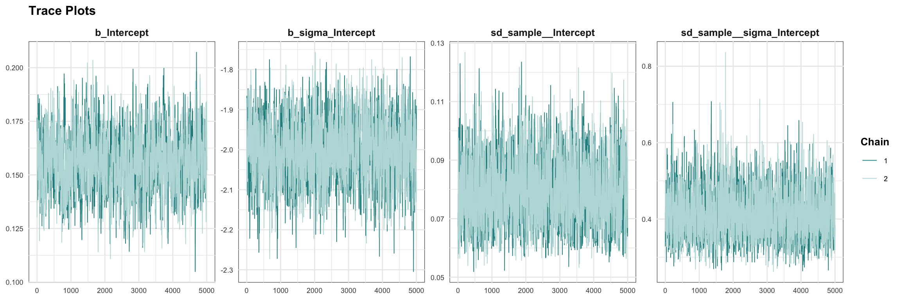
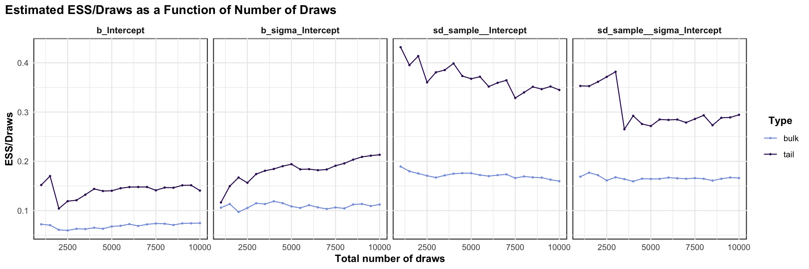
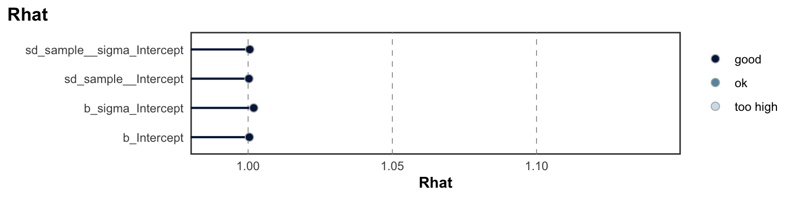
PPCs & LOO
Graphical posterior predictive checks
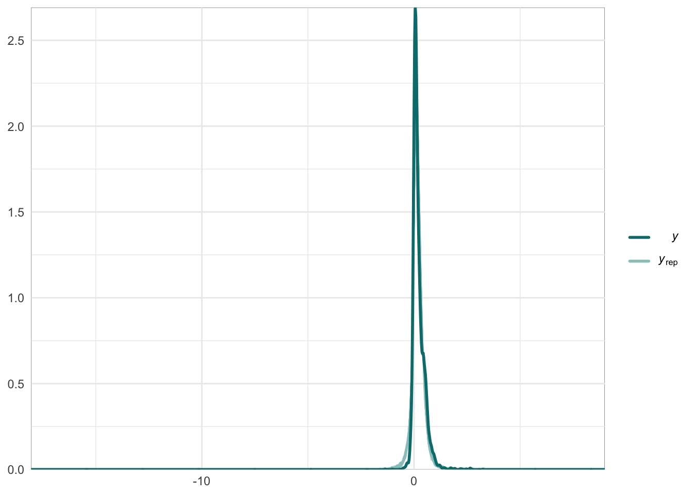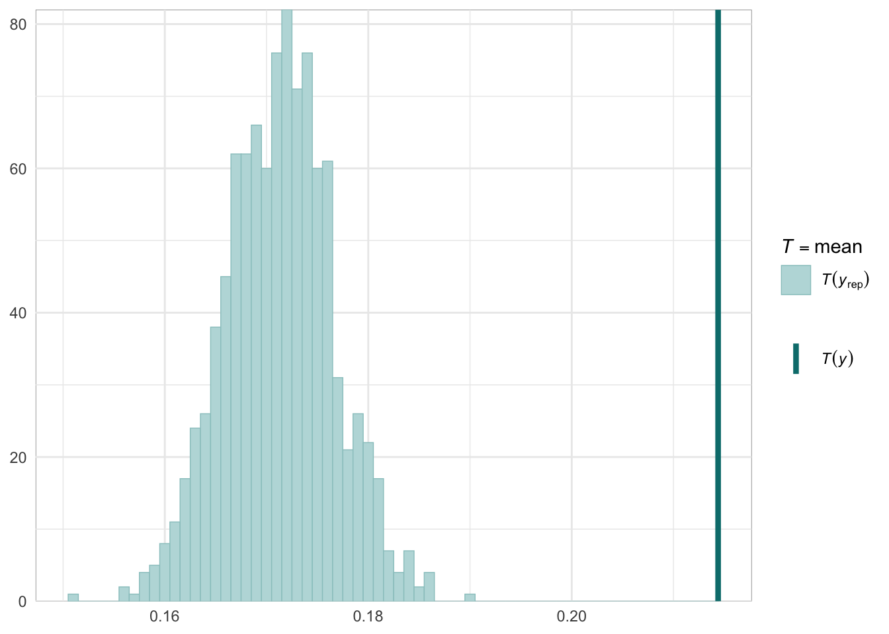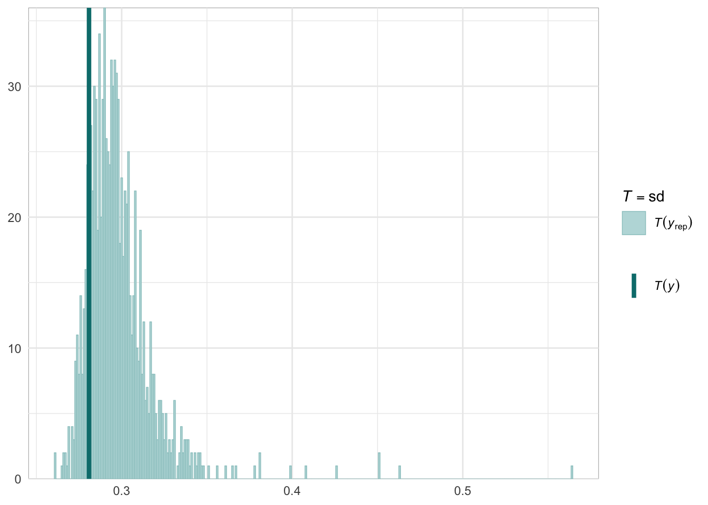
##
## Computed from 10000 by 5556 log-likelihood matrix
##
## Estimate SE
## elpd_loo 637.8 86.2
## p_loo 91.3 2.7
## looic -1275.7 172.4
## ------
## Monte Carlo SE of elpd_loo is 0.1.
##
## All Pareto k estimates are good (k < 0.5).
## See help('pareto-k-diagnostic') for details.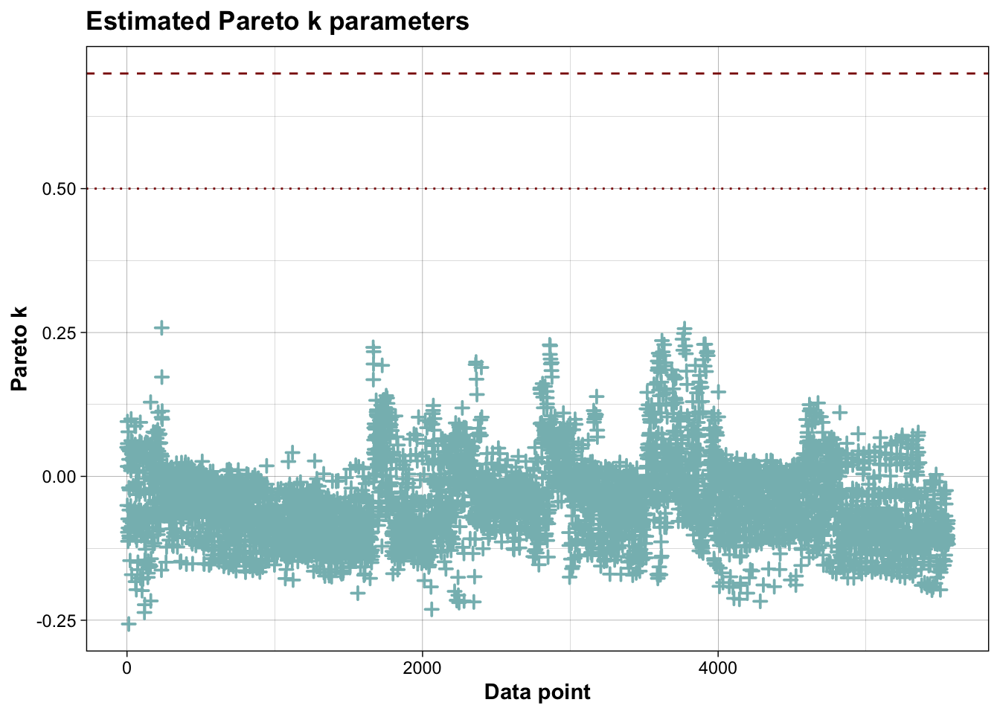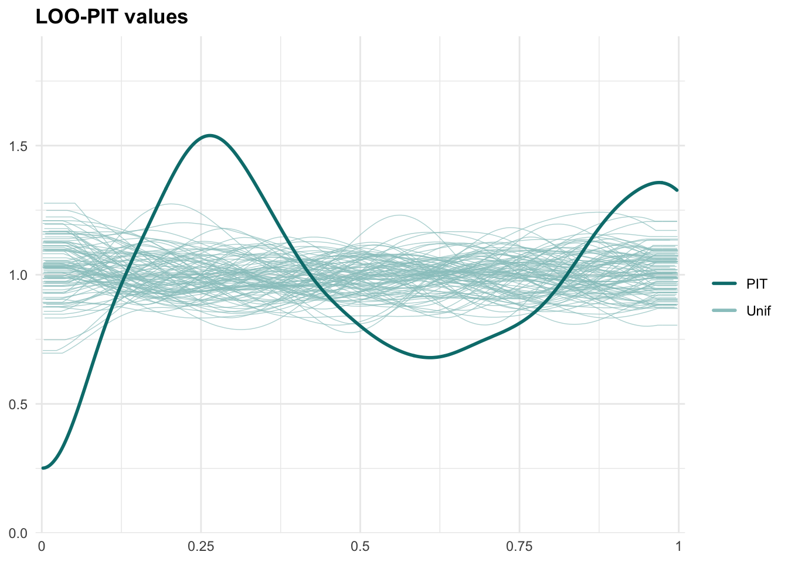
Measure-Pair as Covariate
Model specification in brms
family <- brmsfamily(
family = "student",
link = "identity"
)
formula <- bf(wcor_z|se(sei_z, sigma = TRUE) ~ 0 + meas_pair_id + (1|sample),
sigma ~ 0 + meas_pair_id + (1|sample))
priors <- c(prior(normal(0, 1), class = "b"),
prior(normal(0, 2), class = "b", dpar = "sigma"),
prior(cauchy(0, 0.3), class = "sd"),
prior(cauchy(0, 0.3), class = "sd", dpar = "sigma"))Model Summary
## Family: student
## Links: mu = identity; sigma = log; nu = identity
## Formula: wcor_z | se(sei_z, sigma = TRUE) ~ 0 + meas_pair_id + (1 | sample)
## sigma ~ 0 + meas_pair_id + (1 | sample)
## Data: dt_ma (Number of observations: 5556)
## Draws: 2 chains, each with iter = 7000; warmup = 2000; thin = 1;
## total post-warmup draws = 10000
##
## Group-Level Effects:
## ~sample (Number of levels: 45)
## Estimate Est.Error l-95% CI u-95% CI
## sd(Intercept) 0.05 0.01 0.03 0.06
## sd(sigma_Intercept) 0.29 0.04 0.22 0.39
## Rhat Bulk_ESS Tail_ESS
## sd(Intercept) 1.00 3103 6202
## sd(sigma_Intercept) 1.00 3316 5235
##
## Population-Level Effects:
## Estimate Est.Error l-95% CI u-95% CI
## meas_pair_id1 0.15 0.02 0.11 0.19
## meas_pair_id2 0.02 0.01 0.01 0.04
## meas_pair_id3 0.20 0.01 0.17 0.22
## meas_pair_id4 0.13 0.01 0.11 0.15
## meas_pair_id5 0.06 0.01 0.04 0.08
## meas_pair_id6 0.41 0.01 0.38 0.43
## sigma_meas_pair_id1 -1.66 0.11 -1.89 -1.44
## sigma_meas_pair_id2 -3.58 0.14 -3.86 -3.31
## sigma_meas_pair_id3 -1.56 0.06 -1.69 -1.44
## sigma_meas_pair_id4 -3.01 0.09 -3.19 -2.82
## sigma_meas_pair_id5 -2.98 0.07 -3.11 -2.85
## sigma_meas_pair_id6 -1.71 0.06 -1.84 -1.58
## Rhat Bulk_ESS Tail_ESS
## meas_pair_id1 1.00 5771 7011
## meas_pair_id2 1.00 1459 3187
## meas_pair_id3 1.00 2504 4766
## meas_pair_id4 1.00 1513 3334
## meas_pair_id5 1.00 1340 2817
## meas_pair_id6 1.00 1886 3762
## sigma_meas_pair_id1 1.00 5255 6763
## sigma_meas_pair_id2 1.00 7100 6707
## sigma_meas_pair_id3 1.00 2941 5046
## sigma_meas_pair_id4 1.00 4342 6313
## sigma_meas_pair_id5 1.00 2988 4594
## sigma_meas_pair_id6 1.00 2483 4191
##
## Family Specific Parameters:
## Estimate Est.Error l-95% CI u-95% CI Rhat Bulk_ESS
## nu 5.10 0.34 4.47 5.82 1.00 14079
## Tail_ESS
## nu 7516
##
## Draws were sampled using sample(hmc). For each parameter, Bulk_ESS
## and Tail_ESS are effective sample size measures, and Rhat is the potential
## scale reduction factor on split chains (at convergence, Rhat = 1).MCMC diagnostics
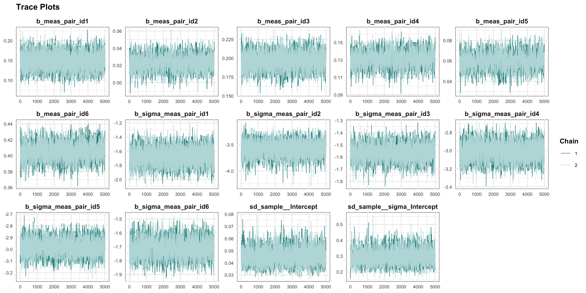
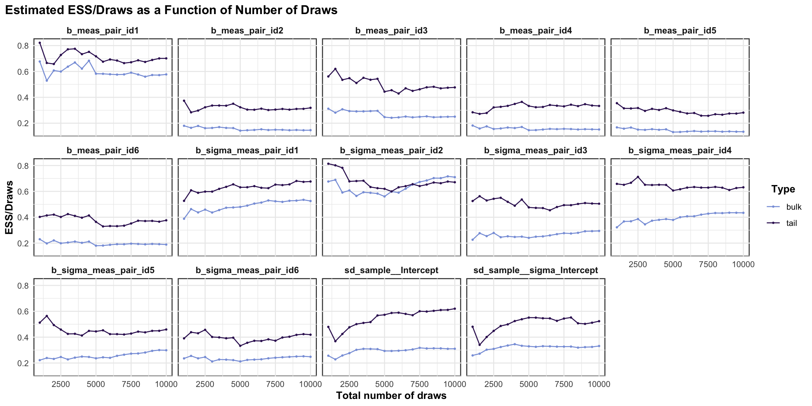
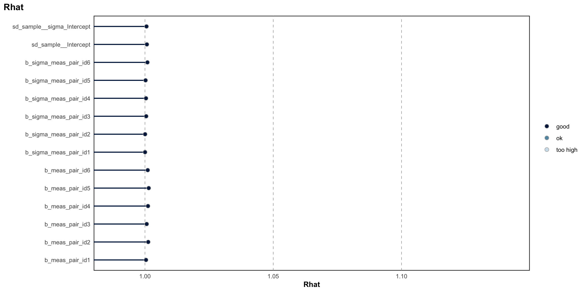
PPCs & LOO
Graphical posterior predictive checks
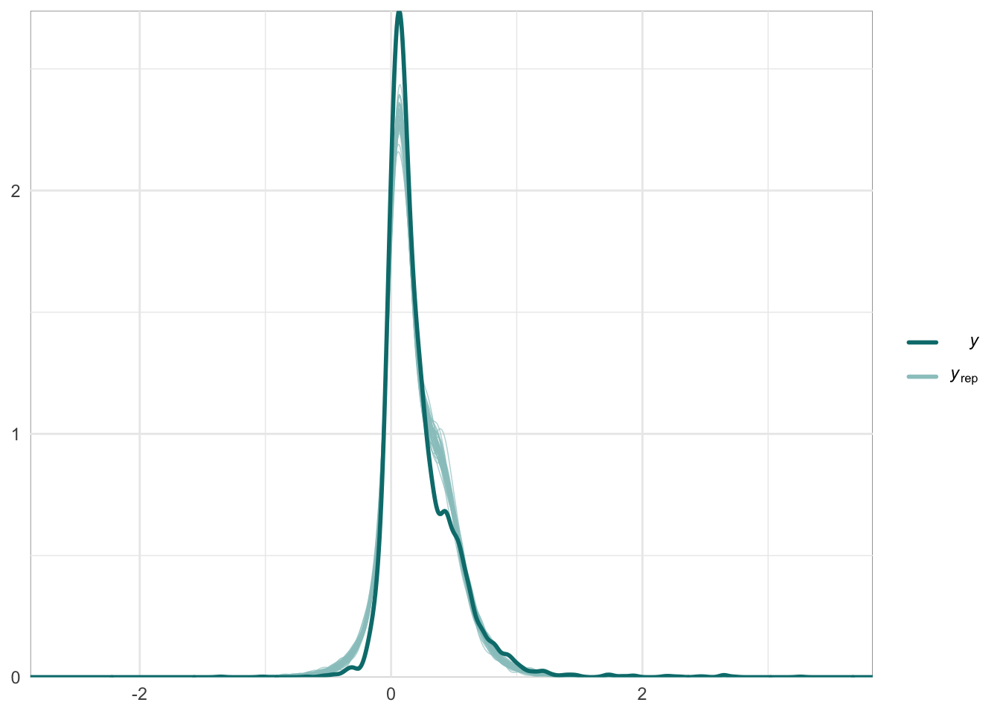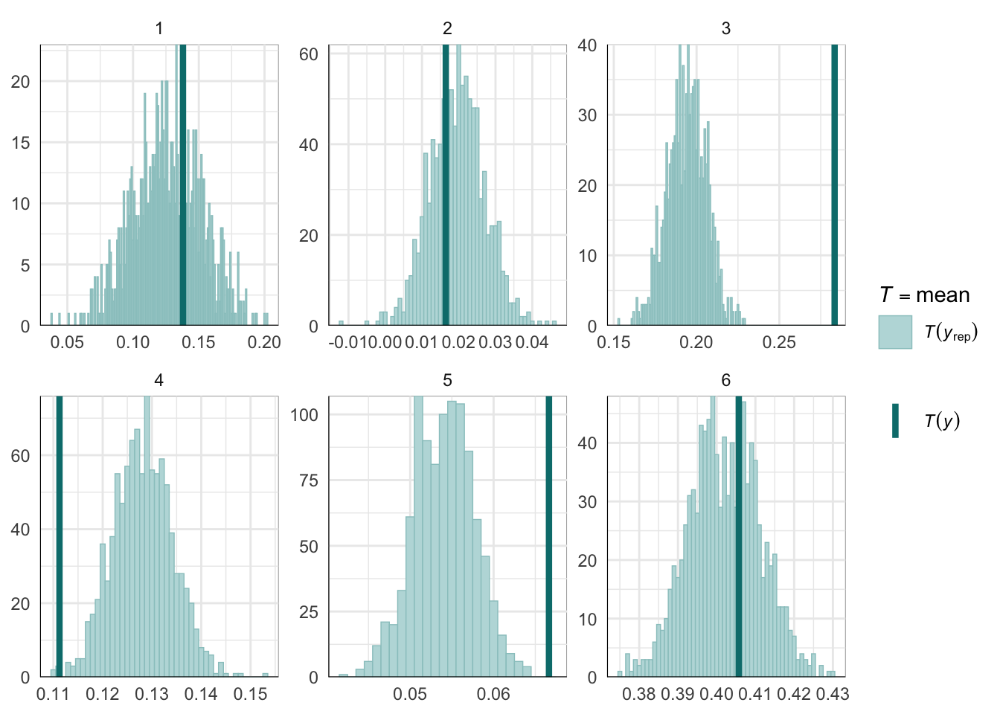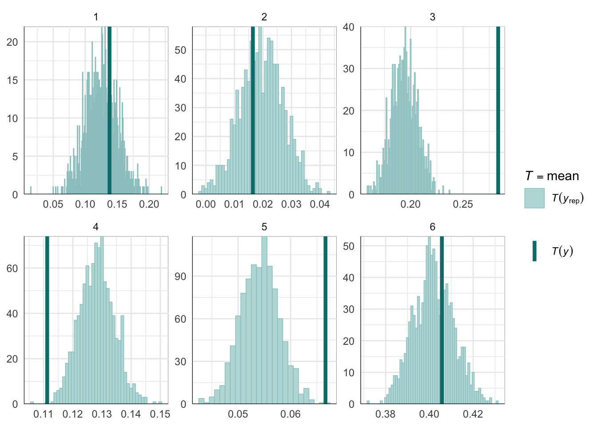
##
## Computed from 10000 by 5556 log-likelihood matrix
##
## Estimate SE
## elpd_loo 2401.7 84.7
## p_loo 83.8 2.5
## looic -4803.4 169.5
## ------
## Monte Carlo SE of elpd_loo is 0.1.
##
## All Pareto k estimates are good (k < 0.5).
## See help('pareto-k-diagnostic') for details.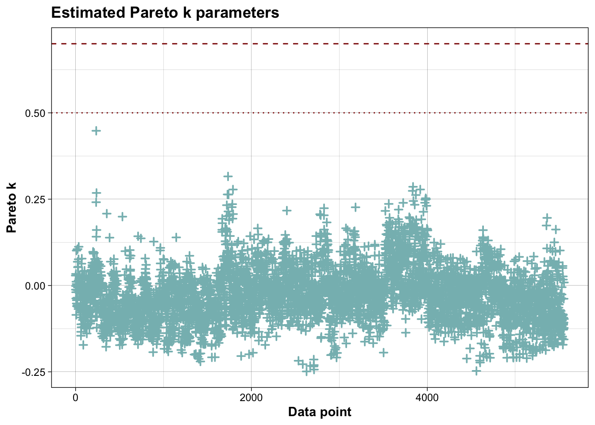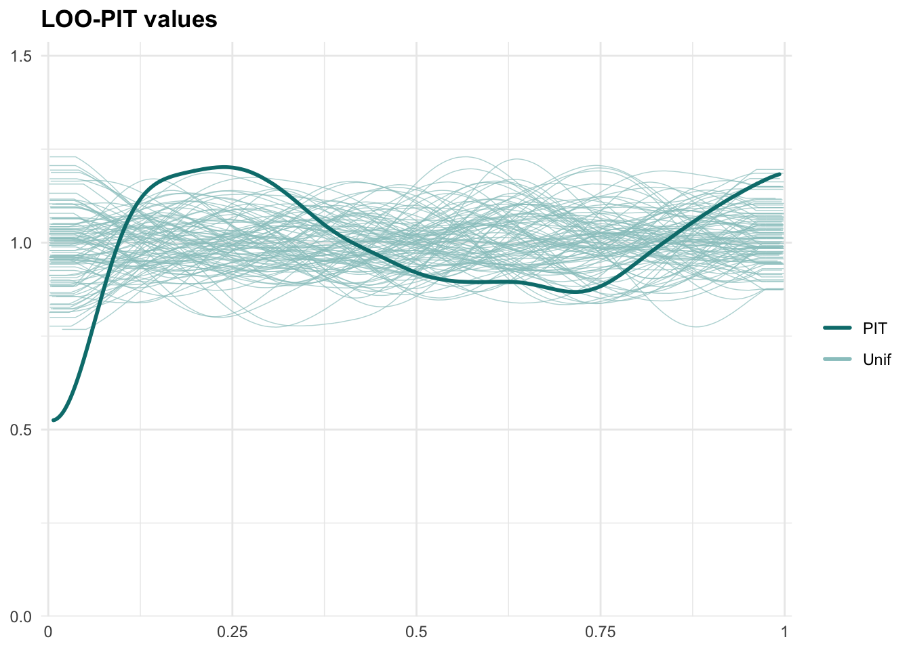
Domain-Pair as Covariate
Model specification in brms
family <- brmsfamily(
family = "student",
link = "identity")
formula <- bf(wcor_z|se(sei_z, sigma = TRUE) ~ 0 + name_pair_id + (1|sample),
sigma ~ 0 + name_pair_id + (1|sample))
priors <- c(prior(normal(0, 1), class = "b"),
prior(normal(0, 2), class = "b", dpar = "sigma"),
prior(cauchy(0, 0.3), class = "sd"),
prior(cauchy(0, 0.3), class = "sd", dpar = "sigma"))Model Summary
## Family: student
## Links: mu = identity; sigma = log; nu = identity
## Formula: wcor_z | se(sei_z, sigma = TRUE) ~ 0 + name_pair_id + (1 | sample)
## sigma ~ 0 + name_pair_id + (1 | sample)
## Data: dt_ma (Number of observations: 5556)
## Draws: 2 chains, each with iter = 7000; warmup = 2000; thin = 1;
## total post-warmup draws = 10000
##
## Group-Level Effects:
## ~sample (Number of levels: 45)
## Estimate Est.Error l-95% CI u-95% CI
## sd(Intercept) 0.04 0.01 0.03 0.06
## sd(sigma_Intercept) 4.33 0.55 3.44 5.52
## Rhat Bulk_ESS Tail_ESS
## sd(Intercept) 1.00 2321 4032
## sd(sigma_Intercept) 1.01 259 687
##
## Population-Level Effects:
## Estimate Est.Error l-95% CI u-95% CI
## name_pair_id1 0.25 0.02 0.22 0.28
## name_pair_id10 0.04 0.03 -0.03 0.09
## name_pair_id100 0.15 0.02 0.11 0.20
## name_pair_id101 0.06 0.02 0.02 0.11
## name_pair_id102 0.25 0.09 0.11 0.40
## name_pair_id103 0.17 0.04 0.09 0.25
## name_pair_id104 0.08 0.02 0.04 0.12
## name_pair_id105 0.19 0.02 0.16 0.23
## name_pair_id106 0.11 0.01 0.09 0.14
## name_pair_id107 0.04 0.02 0.01 0.08
## name_pair_id108 0.11 0.02 0.07 0.15
## name_pair_id109 0.07 0.02 0.03 0.11
## name_pair_id11 0.04 0.01 0.01 0.07
## name_pair_id110 0.11 0.03 0.06 0.18
## name_pair_id111 0.04 0.02 -0.00 0.09
## name_pair_id112 0.12 0.05 0.03 0.22
## name_pair_id113 0.23 0.02 0.19 0.28
## name_pair_id114 0.07 0.02 0.04 0.11
## name_pair_id115 0.18 0.03 0.13 0.23
## name_pair_id116 0.04 0.02 0.00 0.07
## name_pair_id117 0.12 0.02 0.08 0.17
## name_pair_id118 0.13 0.03 0.07 0.20
## name_pair_id119 0.11 0.02 0.07 0.15
## name_pair_id12 0.05 0.01 0.02 0.07
## name_pair_id120 -0.03 0.01 -0.05 -0.00
## name_pair_id121 0.14 0.04 0.04 0.20
## name_pair_id122 0.21 0.07 0.10 0.32
## name_pair_id123 0.09 0.04 0.01 0.18
## name_pair_id124 0.22 0.02 0.18 0.27
## name_pair_id125 -0.03 0.01 -0.05 -0.01
## name_pair_id126 -0.00 0.06 -0.12 0.12
## name_pair_id127 0.01 0.01 -0.01 0.03
## name_pair_id128 0.00 0.01 -0.02 0.02
## name_pair_id129 -0.03 0.01 -0.05 -0.01
## name_pair_id13 0.03 0.01 0.00 0.05
## name_pair_id130 -0.03 0.01 -0.05 -0.01
## name_pair_id131 -0.04 0.01 -0.06 -0.02
## name_pair_id132 -0.06 0.01 -0.08 -0.04
## name_pair_id133 1.19 0.02 1.15 1.25
## name_pair_id134 0.48 0.02 0.45 0.51
## name_pair_id135 0.35 0.02 0.31 0.38
## name_pair_id136 0.46 0.02 0.42 0.50
## name_pair_id137 0.44 0.02 0.41 0.48
## name_pair_id138 0.50 0.02 0.46 0.53
## name_pair_id139 0.25 0.02 0.22 0.29
## name_pair_id14 0.05 0.01 0.03 0.08
## name_pair_id140 0.16 0.02 0.11 0.20
## name_pair_id141 0.18 0.11 -0.02 0.37
## name_pair_id142 0.20 0.03 0.15 0.25
## name_pair_id143 0.43 0.04 0.36 0.51
## name_pair_id144 0.04 0.03 -0.02 0.09
## name_pair_id145 0.21 0.02 0.17 0.25
## name_pair_id146 0.25 0.03 0.19 0.33
## name_pair_id147 0.27 0.03 0.21 0.33
## name_pair_id148 0.22 0.05 0.12 0.32
## name_pair_id149 0.44 0.02 0.40 0.48
## name_pair_id15 0.10 0.01 0.08 0.12
## name_pair_id150 0.21 0.02 0.16 0.25
## name_pair_id151 0.18 0.04 0.10 0.27
## name_pair_id152 0.15 0.02 0.12 0.18
## name_pair_id153 0.14 0.02 0.09 0.19
## name_pair_id154 0.28 0.02 0.24 0.32
## name_pair_id155 0.14 0.02 0.10 0.19
## name_pair_id156 0.19 0.02 0.15 0.24
## name_pair_id157 0.04 0.02 -0.00 0.07
## name_pair_id158 0.09 0.05 -0.02 0.19
## name_pair_id159 0.65 0.02 0.61 0.69
## name_pair_id16 0.08 0.02 0.05 0.11
## name_pair_id160 0.36 0.02 0.33 0.39
## name_pair_id161 0.43 0.02 0.40 0.46
## name_pair_id162 0.51 0.01 0.48 0.53
## name_pair_id163 0.46 0.01 0.43 0.49
## name_pair_id164 0.35 0.01 0.33 0.38
## name_pair_id165 -0.04 0.02 -0.07 -0.01
## name_pair_id166 0.09 0.02 0.05 0.13
## name_pair_id167 0.48 0.08 0.31 0.65
## name_pair_id168 0.44 0.02 0.40 0.48
## name_pair_id169 0.45 0.02 0.42 0.48
## name_pair_id17 0.08 0.02 0.05 0.11
## name_pair_id170 0.28 0.01 0.25 0.31
## name_pair_id171 0.38 0.02 0.35 0.41
## name_pair_id172 0.33 0.03 0.26 0.39
## name_pair_id173 0.47 0.02 0.43 0.51
## name_pair_id174 0.44 0.02 0.40 0.48
## name_pair_id175 0.31 0.02 0.27 0.35
## name_pair_id176 0.93 0.03 0.86 0.98
## name_pair_id177 0.54 0.02 0.50 0.57
## name_pair_id178 0.32 0.01 0.29 0.34
## name_pair_id179 0.10 0.05 0.00 0.20
## name_pair_id18 0.09 0.01 0.06 0.11
## name_pair_id180 0.37 0.03 0.31 0.43
## name_pair_id181 0.30 0.01 0.27 0.33
## name_pair_id182 -0.03 0.05 -0.13 0.07
## name_pair_id183 0.54 0.02 0.50 0.57
## name_pair_id19 0.06 0.01 0.04 0.08
## name_pair_id2 -0.21 0.02 -0.26 -0.16
## name_pair_id20 0.08 0.02 0.05 0.12
## name_pair_id21 0.35 0.06 0.23 0.47
## name_pair_id22 0.05 0.02 0.00 0.10
## name_pair_id23 0.05 0.06 -0.08 0.13
## name_pair_id24 0.02 0.02 -0.03 0.06
## name_pair_id25 0.07 0.04 -0.04 0.13
## name_pair_id26 0.06 0.02 0.02 0.11
## name_pair_id27 -0.04 0.01 -0.06 -0.02
## name_pair_id28 0.11 0.01 0.09 0.13
## name_pair_id29 0.14 0.02 0.09 0.18
## name_pair_id3 0.14 0.02 0.10 0.17
## name_pair_id30 0.10 0.01 0.08 0.12
## name_pair_id31 0.16 0.01 0.14 0.18
## name_pair_id32 0.24 0.01 0.22 0.27
## name_pair_id33 0.11 0.01 0.09 0.13
## name_pair_id34 0.14 0.01 0.11 0.17
## name_pair_id35 -0.12 0.02 -0.16 -0.09
## name_pair_id36 0.43 0.04 0.36 0.50
## name_pair_id37 -0.01 0.01 -0.04 0.02
## name_pair_id38 0.03 0.02 -0.01 0.08
## name_pair_id39 0.11 0.01 0.08 0.14
## name_pair_id4 0.03 0.04 -0.06 0.12
## name_pair_id40 0.11 0.01 0.09 0.13
## name_pair_id41 0.01 0.02 -0.04 0.05
## name_pair_id42 0.06 0.02 0.03 0.09
## name_pair_id43 0.07 0.01 0.04 0.09
## name_pair_id44 0.47 0.01 0.44 0.49
## name_pair_id45 0.15 0.01 0.12 0.18
## name_pair_id46 0.18 0.02 0.15 0.21
## name_pair_id47 0.13 0.02 0.09 0.17
## name_pair_id48 0.08 0.04 0.02 0.19
## name_pair_id49 0.16 0.03 0.10 0.21
## name_pair_id5 0.04 0.01 0.02 0.07
## name_pair_id50 0.20 0.03 0.15 0.25
## name_pair_id51 0.06 0.01 0.05 0.08
## name_pair_id52 0.07 0.01 0.05 0.10
## name_pair_id53 0.15 0.02 0.10 0.19
## name_pair_id54 0.11 0.02 0.08 0.14
## name_pair_id55 0.10 0.02 0.07 0.14
## name_pair_id56 0.09 0.01 0.07 0.11
## name_pair_id57 0.08 0.01 0.06 0.09
## name_pair_id58 0.07 0.01 0.05 0.10
## name_pair_id59 0.10 0.01 0.08 0.13
## name_pair_id6 0.04 0.01 0.01 0.07
## name_pair_id60 0.13 0.03 0.07 0.19
## name_pair_id61 0.14 0.03 0.07 0.20
## Rhat Bulk_ESS Tail_ESS
## name_pair_id1 1.00 854 2725
## name_pair_id10 1.00 3031 6538
## name_pair_id100 1.00 1643 4733
## name_pair_id101 1.00 1332 4021
## name_pair_id102 1.00 2290 2172
## name_pair_id103 1.00 3981 5915
## name_pair_id104 1.00 910 3138
## name_pair_id105 1.00 793 2992
## name_pair_id106 1.01 467 1617
## name_pair_id107 1.00 753 2439
## name_pair_id108 1.00 927 3152
## name_pair_id109 1.00 917 3276
## name_pair_id11 1.00 523 1314
## name_pair_id110 1.00 1564 3324
## name_pair_id111 1.00 1298 4096
## name_pair_id112 1.00 4170 4832
## name_pair_id113 1.00 1458 4431
## name_pair_id114 1.00 1006 3685
## name_pair_id115 1.00 1757 4867
## name_pair_id116 1.00 842 2888
## name_pair_id117 1.00 1467 4812
## name_pair_id118 1.00 1953 5439
## name_pair_id119 1.00 1050 3325
## name_pair_id12 1.01 399 1212
## name_pair_id120 1.01 472 1503
## name_pair_id121 1.00 2671 4509
## name_pair_id122 1.00 1538 1661
## name_pair_id123 1.00 4204 5928
## name_pair_id124 1.00 2266 4925
## name_pair_id125 1.01 233 772
## name_pair_id126 1.00 8603 6073
## name_pair_id127 1.01 240 788
## name_pair_id128 1.01 256 768
## name_pair_id129 1.01 353 943
## name_pair_id13 1.01 349 912
## name_pair_id130 1.01 265 819
## name_pair_id131 1.01 249 838
## name_pair_id132 1.01 273 853
## name_pair_id133 1.00 1704 4403
## name_pair_id134 1.00 880 2198
## name_pair_id135 1.00 1115 3257
## name_pair_id136 1.00 1146 2953
## name_pair_id137 1.00 882 2562
## name_pair_id138 1.00 796 2138
## name_pair_id139 1.00 1065 3036
## name_pair_id14 1.01 342 1396
## name_pair_id140 1.00 1096 3634
## name_pair_id141 1.00 3281 2756
## name_pair_id142 1.00 1437 3991
## name_pair_id143 1.00 3811 6363
## name_pair_id144 1.00 2602 6298
## name_pair_id145 1.00 967 2448
## name_pair_id146 1.00 2252 5342
## name_pair_id147 1.00 2716 5813
## name_pair_id148 1.00 5779 6557
## name_pair_id149 1.00 927 2893
## name_pair_id15 1.01 371 1166
## name_pair_id150 1.00 1656 5590
## name_pair_id151 1.00 3833 5345
## name_pair_id152 1.00 880 2751
## name_pair_id153 1.00 1526 4955
## name_pair_id154 1.00 1427 2703
## name_pair_id155 1.00 1426 4319
## name_pair_id156 1.00 1813 4811
## name_pair_id157 1.00 785 1832
## name_pair_id158 1.00 7258 6155
## name_pair_id159 1.00 1058 3501
## name_pair_id16 1.00 842 2355
## name_pair_id160 1.00 683 2471
## name_pair_id161 1.00 790 2936
## name_pair_id162 1.00 499 1542
## name_pair_id163 1.00 570 1785
## name_pair_id164 1.00 580 1706
## name_pair_id165 1.00 777 2729
## name_pair_id166 1.00 1110 3417
## name_pair_id167 1.00 11138 7480
## name_pair_id168 1.00 1110 3485
## name_pair_id169 1.00 831 3401
## name_pair_id17 1.00 837 2235
## name_pair_id170 1.00 689 2061
## name_pair_id171 1.00 962 2960
## name_pair_id172 1.00 3441 6797
## name_pair_id173 1.00 1251 4264
## name_pair_id174 1.00 1382 3651
## name_pair_id175 1.00 1217 3325
## name_pair_id176 1.00 1929 3410
## name_pair_id177 1.00 1020 3188
## name_pair_id178 1.01 286 1029
## name_pair_id179 1.00 5880 6179
## name_pair_id18 1.01 412 1303
## name_pair_id180 1.00 2558 6422
## name_pair_id181 1.00 603 2069
## name_pair_id182 1.00 5969 6456
## name_pair_id183 1.00 901 2704
## name_pair_id19 1.01 298 911
## name_pair_id2 1.00 2033 4887
## name_pair_id20 1.00 608 1809
## name_pair_id21 1.00 7709 6739
## name_pair_id22 1.00 1601 4903
## name_pair_id23 1.00 3741 4993
## name_pair_id24 1.00 1515 3493
## name_pair_id25 1.00 2839 4773
## name_pair_id26 1.00 1547 5035
## name_pair_id27 1.01 255 808
## name_pair_id28 1.01 275 823
## name_pair_id29 1.00 1413 3418
## name_pair_id3 1.00 1559 4476
## name_pair_id30 1.01 245 776
## name_pair_id31 1.01 284 793
## name_pair_id32 1.00 464 1387
## name_pair_id33 1.01 277 867
## name_pair_id34 1.00 483 1664
## name_pair_id35 1.00 975 3930
## name_pair_id36 1.00 5647 6735
## name_pair_id37 1.01 672 2177
## name_pair_id38 1.00 1691 3621
## name_pair_id39 1.01 571 1990
## name_pair_id4 1.00 5601 6275
## name_pair_id40 1.01 272 754
## name_pair_id41 1.00 1595 3270
## name_pair_id42 1.00 741 1929
## name_pair_id43 1.01 330 1123
## name_pair_id44 1.00 794 2256
## name_pair_id45 1.00 595 1821
## name_pair_id46 1.00 725 3261
## name_pair_id47 1.00 1124 4264
## name_pair_id48 1.00 2548 5971
## name_pair_id49 1.00 2011 5565
## name_pair_id5 1.00 594 2190
## name_pair_id50 1.00 1680 4088
## name_pair_id51 1.01 434 995
## name_pair_id52 1.01 363 1227
## name_pair_id53 1.00 1504 5437
## name_pair_id54 1.00 983 3048
## name_pair_id55 1.00 716 2727
## name_pair_id56 1.01 257 816
## name_pair_id57 1.01 313 860
## name_pair_id58 1.01 341 1342
## name_pair_id59 1.01 472 1503
## name_pair_id6 1.00 552 1981
## name_pair_id60 1.00 2096 5707
## name_pair_id61 1.00 2616 4551
## [ reached getOption("max.print") -- omitted 224 rows ]
##
## Family Specific Parameters:
## Estimate Est.Error l-95% CI u-95% CI Rhat Bulk_ESS
## nu 28.53 9.12 16.49 51.70 1.00 4613
## Tail_ESS
## nu 6545
##
## Draws were sampled using sample(hmc). For each parameter, Bulk_ESS
## and Tail_ESS are effective sample size measures, and Rhat is the potential
## scale reduction factor on split chains (at convergence, Rhat = 1).MCMC diagnostics

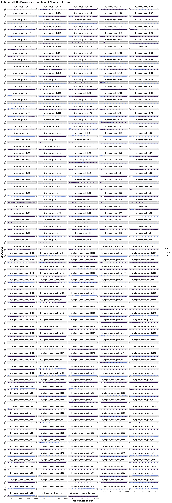
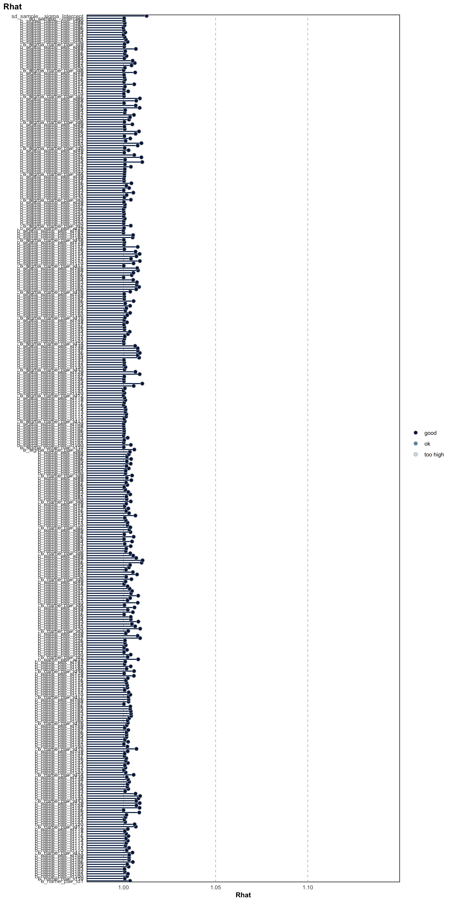
PPCs & LOO
Graphical posterior predictive checks
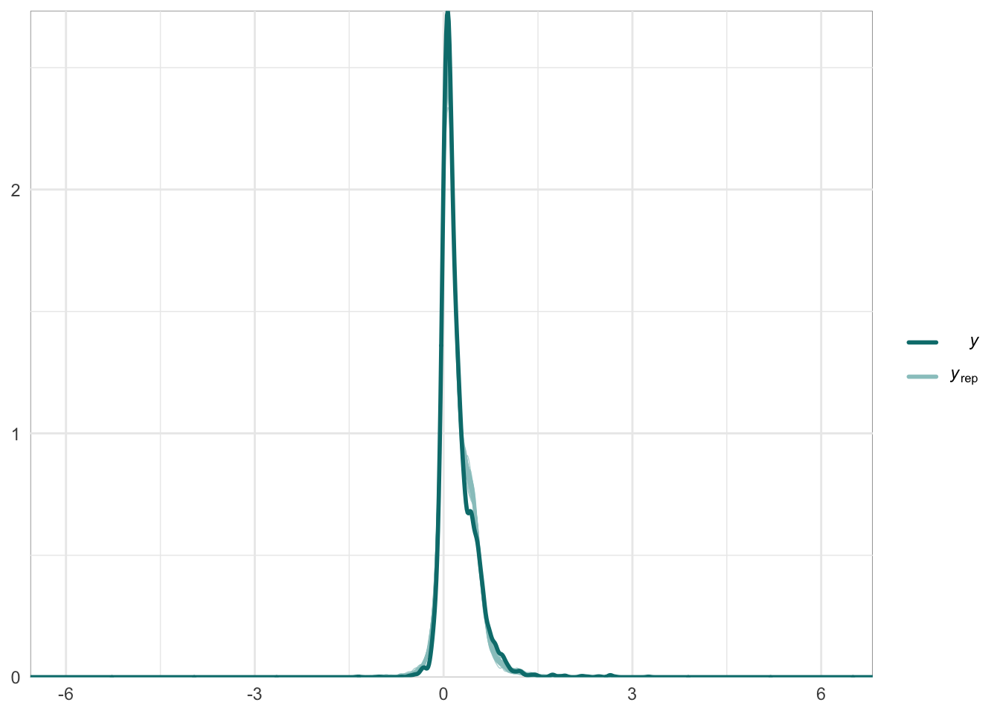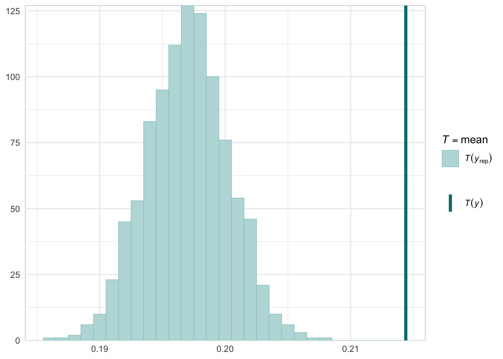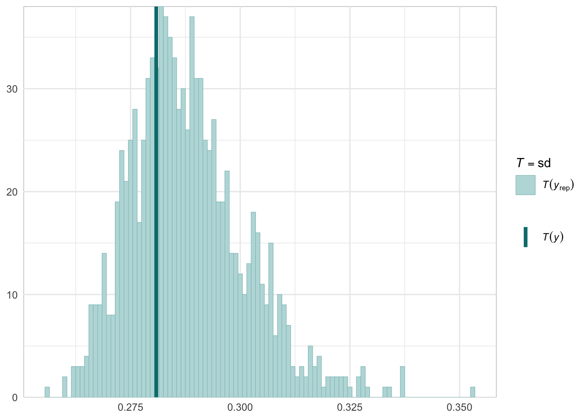
##
## Computed from 10000 by 5556 log-likelihood matrix
##
## Estimate SE
## elpd_loo 4822.8 78.7
## p_loo 403.1 13.1
## looic -9645.5 157.4
## ------
## Monte Carlo SE of elpd_loo is NA.
##
## Pareto k diagnostic values:
## Count Pct. Min. n_eff
## (-Inf, 0.5] (good) 5487 98.8% 579
## (0.5, 0.7] (ok) 59 1.1% 265
## (0.7, 1] (bad) 10 0.2% 16
## (1, Inf) (very bad) 0 0.0% <NA>
## See help('pareto-k-diagnostic') for details.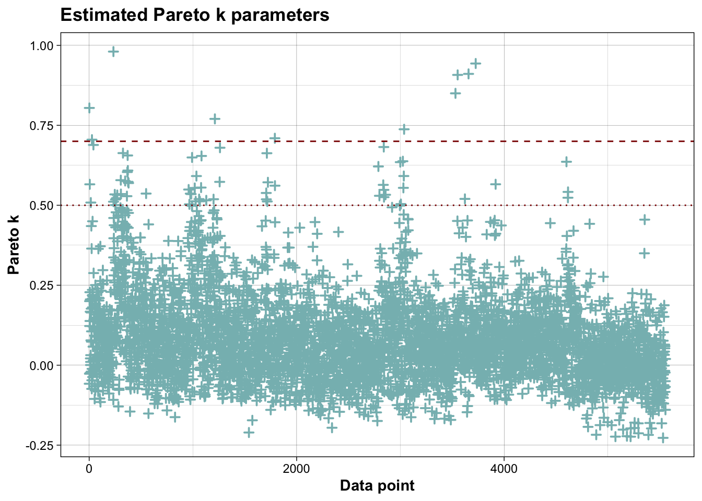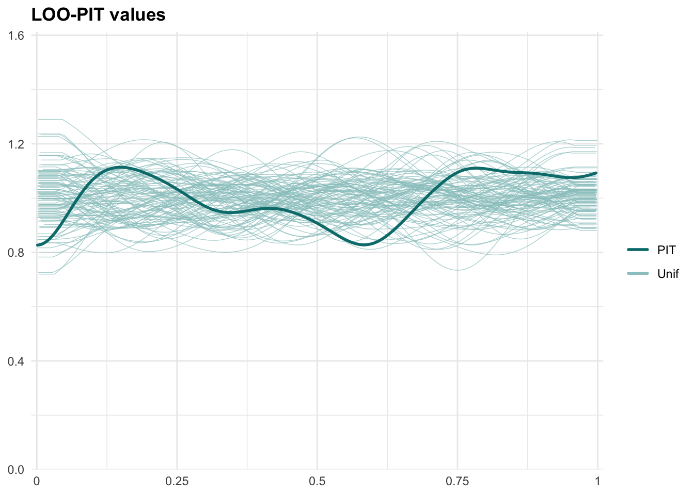